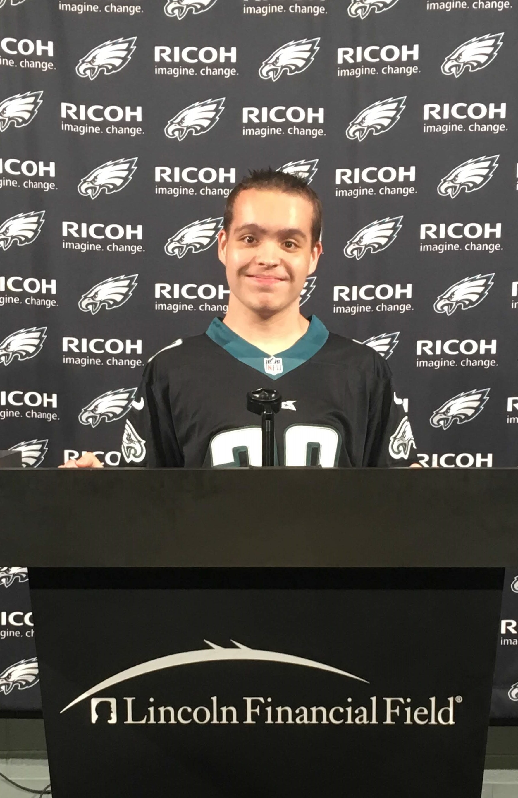

Technical Mindset
Whether it's to address a particular issue, explore a new technology, or learn how something works, I like tinkering with things.
Ever since I built my first computer, my means of tinkering with things has been on a computer. Programming little mini projects, configuring Linux to exactly how I want it, and installing new software to test out are some activities that I can become heavily invested in.
How I Have Fun
What do I like to do when I'm not doing something computer related? Well, lots of things:
- I picked up golf in the summer of 2018. I'm not very good at it but it's a lot of fun!
- Watching the Eagles. I watch the Eagles play every weekend, go birds!
- I try to read when I can. My favorite book so far is Hitchhiker's Guide to the Galaxy.
- Cooking. I used to eat junk for just about every meal, then I started cooking. I meal prep every Sunday, it's fun, healthy, and tastes delicious!
- Working out. While I was losing weight I would go to the gym 5-6 times every week, but now I'm at a pretty good spot so I only go a couple times per week. It's mostly weight training, but sometimes I throw in a little cardio.